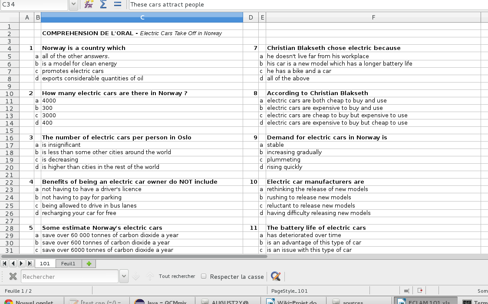
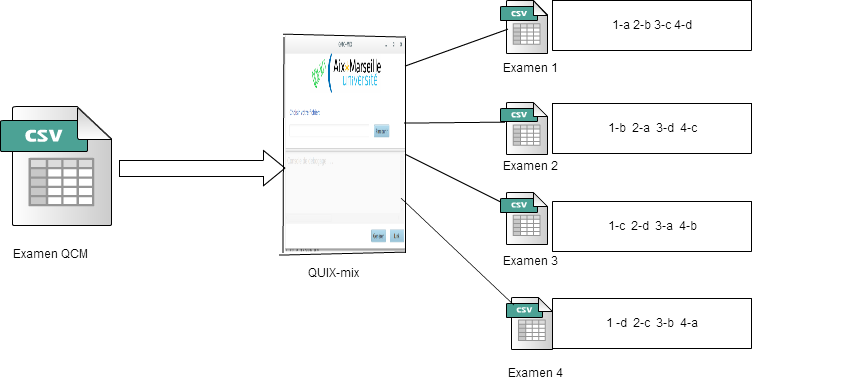
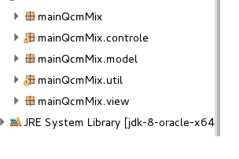
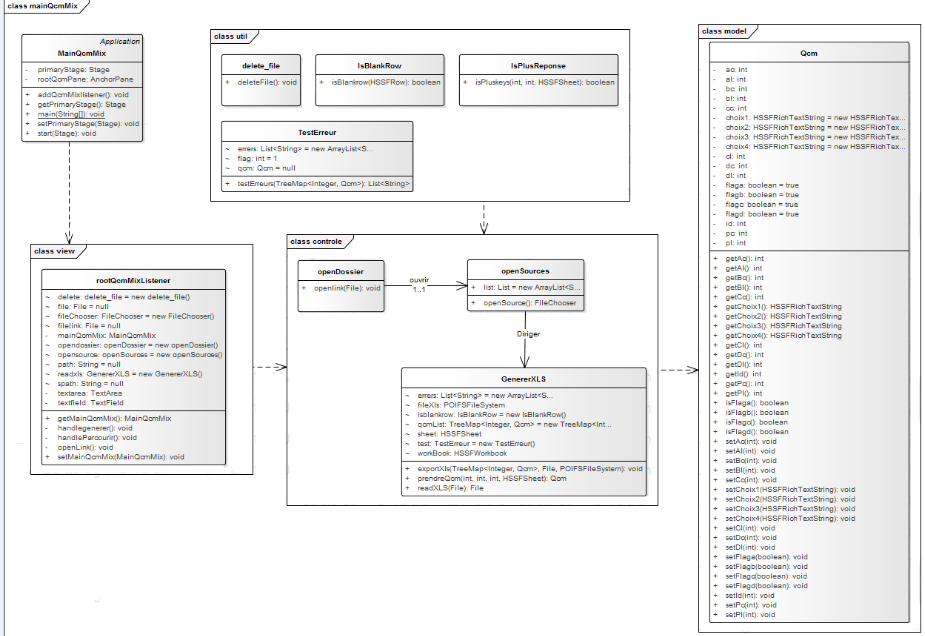

Welcome to the Projet-QCM wiki!
1- c'est quoi QUIX-MIX ?
Quix-mix est un software qui permet de créer des versions différentes d'un sujet d'examen structuré sur la forme des Questions à choix multiples(QCM). Cela garantie la probabilité que deux candidat voisins en salle d'examen n' aient pas le même sujet d'examen avec la meme organisation. Il a été conçu dans le cadre du projet de Génie Logiciel du Master 1 Informatique de Luminy par: Augustin DEUYA augustin2ya@yahoo.it, Xiaoze JI xiaozej@gmail.com , jIawen PAN pjwadsn2@gmail.com, Haytam EL MOUSSAOUI htmelm@gmail.com ,Mouhssine Eddine SAKAKINI mouhssine.sakakini@gmail.com et Mehdi Snaoui Snaoui.mehdi@gmail.com
2- Guide d'installation
2-1 A propos du logiciel
Ce manuel décrit comment installer le logicile QCM-mix .Comme défini plus haut, notre application a pour but principal de produire des versions differentes d'un sujet d'examen sous le model des Questions aux Choix Multiples (QCM).
Le software est conçue pour être portable, pour permettre une facilité d’utilisation. Ainsi donc l’utilisateur pourra s’il le désire conserver juste le qcm-mix.exe dans une clé usb et l’utiliser sur n’importe que machine windows. Néanmoins le software sera contenu dans fichier fichier appelé QCM.mix.zip contenant
Readme
qcm-mix.jar
qcm-mix.exe
2-2 Avant l’installation
Avant d’intaller ce logiciel, il est conseillé de vérifier que votre ordinateur dispose de la configuration requise.
|
Système d’exploitation |
Windows, Linux |
|
Java |
Version 8 |
|
Autres configurations matérielles requises |
Envireonnement permettant le parfait fonctionnement des systèmes d’exploitations cités ci-dessus |
2-3a)- Installation sur Windows
Pour l’installation sur Windows, après avoir décompressé le fichier qcm-mix.zip, il suffit juste de double-cliquer sur le fichier qcm-mix.exe et l’installation se fera sans aucune autre sollicitation de l’utilisateur.
2-3b)- Installation sur Linux
Pour l’installation sous linux, c’est avec le fichier .jar que l’on obtien après avoir décompresser le fichier zip.
3- Indications importantes
Avant toute utilisation, de ce logiciel il est important de préciser certaines conditions à respecter afin d' avoir une grande satisfaction :
a) Le fichier source de l'examen à traiter doit absolument être au format XLS doit obéir à un protocole sur les lignes et colonnes du fichier XLS comme décrit dans la suite.
b) Les questions doivent être précédées des caractères numériques indiquant le numéro de la question.
c) Les colonnes A et D contiendront les numéros des questions. Tandis que Les colonnes B et E contiendront les propositions de réponses énumérées par: a,b,c,d (maximum 4 propositions de réponses).
d) Les colonne C et F contiendront les sous partie du sujet, les questions et les réponses.
* Il faut se rassurer que le chaque question et ses propositions de réponses se suivent sur un maximum de 6 lignes, dont 2 maximum pour la question.
* Une proposition de réponse doit ténir sur sa ligne d’énumération sans passer à la ligne suivant, autrement dit la dernière ligne sera perdue.
|
A |
B |
C |
D |
E |
F |
|
|
|
COMPREHENSION DE L'ORAL |
|
|
|
|
|
|
|
|
|
|
|
1 |
|
Norway is a country which |
3 |
|
Christian Blakseth chose e.
|
|
|
a |
all of the other answers. |
|
a |
he doesn't live far from his workplace |
|
|
b |
promotes electric cars |
|
b |
his car is a new model which |
|
|
c |
exports considerable quantities of oil |
|
c |
he has a bike and a car |
|
|
d |
exports considerable quantities of oil |
|
d |
all of the above |
|
|
|
|
|
|
|
|
2 |
|
These cars attract people |
4 |
|
Norway is planning |
|
|
a |
all of the other answers. |
|
a |
to charge people for new batteries |

3-Utilisation de base
Au lancement de l'application, une unique page apparaît. Elle est composée de plusieurs sections:
Un bouton Parcourrir
Un bouton Générer
Un bouton Link
Un cadrant
Le logo de l'application
Le Bouton
Comme son nom peut l'indiquer, il permet de pouvoir charger dans l'application le fichier sujet d’examen à dupliquer au format XLS .
Le bouton
Ce bouton nous permet après insertion d'un sujet d'examen QCM (fichier XLS) de générer 4 autres versions différentes dudit examen sans en altérer son contenu.
Le bouton
Ce bouton nous permet d'accéder au dossier (EXAMEN) contenant les 4 versions d'examen nommées Examen1, Examen2, Examen3, Examen4 générés par l’application
Le cadrant 1
Le cadrant est une fenêtre qui nous renseigne via des messages texte en fond d’écran sur le bon déroulement des opérations ( succès ou de échec d'une action effectuée).
Les messages indiquant un succès d’opération sont colorés en VERT, tandis que les messages système indiquant une erreur de manipulation ou de formatage sont color2s en ROUGE
Cadrant 2
Ce cadrant situé à l’extrême droite de l’interface indique la règle de mélange des propositions de réponses dans les fichiers résultat par rapport au fichier original.

QCM-mix
4- Choix technologiques
Java
Comme langage de programmation nous avons utilisé le Java vu la neécessité de la portabilité de l’application qui doit etre éxécutable sur n’importe quel environnement. Egalement parcequ’il est possible de trouver facilement des ressources sur internet traintant de ce langage.
JavaFX
Pour l’interface GUI, nous avons utiliser JavaFX, qui est une technologie recente d’api qui étends le langage de de style CSS sur java , permettant ainsi de faire de jolie interfaces .
POI apache
C’est un projet open source du groupe apache dont le but est de permettre la manipulation de la suite bureautique office de Microsoft dans des applications java mais sans utiliser office
5- Les packages
Notre projet comprend 5 packages

6- Architecture globale de l’application
